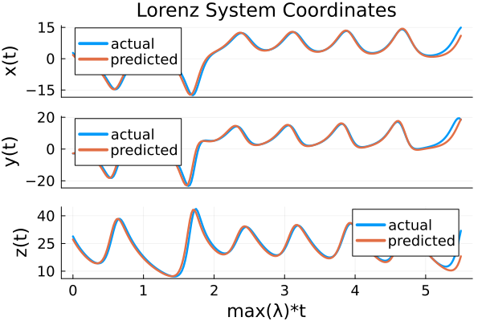

Continuous ESN: forecasting Lorenz
ContinuousESN is a continuous-time Echo State Network that implements the ODE of (Lukoševičius, 2012):
\[\dot{\mathbf{x}}(t) = -\mathbf{x}(t) + \tanh\!\left( \mathbf{W}_{\text{in}}\,\mathbf{u}(t) + \mathbf{W}_r\,\mathbf{x}(t) + \mathbf{b}\right)\]
This tutorial trains a ContinuousESN on Lorenz-63 data and rolls it forward autoregressively to reproduce the attractor. The training and prediction pipeline is the same as for ESN.
Building a Lorenz dataset
using ReservoirComputing
using LuxCore: setup
using SciMLBase
using DataInterpolations
using OrdinaryDiffEqTsit5
using Plots
using Random
Random.seed!(42)
rng = MersenneTwister(17)
function lorenz!(du, u, p, t)
du[1] = p[1] * (u[2] - u[1])
du[2] = u[1] * (p[2] - u[3]) - u[2]
du[3] = u[1] * u[2] - p[3] * u[3]
end
data_prob = ODEProblem(
lorenz!, [1.0, 0.0, 0.0], (0.0, 40.0), [10.0, 28.0, 8 / 3]
)
data = Array(solve(data_prob, Tsit5(); saveat = 0.02))
shift, train_len, predict_len = 300, 1000, 250
input_data = data[:, shift:(shift + train_len - 1)]
target_data = data[:, (shift + 1):(shift + train_len)]
test = data[:, (shift + train_len):(shift + train_len + predict_len - 1)]3×250 Matrix{Float64}:
2.80893 1.80086 0.989378 … 11.4573 12.8062 14.014 14.9226
-2.77225 -2.72155 -2.62781 18.3428 19.2997 19.4236 18.4676
28.853 27.2322 25.7459 20.7775 24.172 28.0072 31.9187Constructing the ContinuousESN
N_res = 300
res_radius = 0.9
res_sparsity = 6 / N_res
# Float64 initialisers so the reservoir, the solve, and the input all
# share a numeric type. Without these the cell would default to
# Float32 via `scaled_rand` / `rand_sparse` / `zeros32`.
init_input_f64(rng, d...) = scaled_rand(rng, Float64, d...)
init_reservoir_f64(rng, d...) = rand_sparse(
rng, Float64, d...; radius = res_radius, sparsity = res_sparsity
)
esn_train = ContinuousESN(
3, N_res, 3, (0.0, Float64(train_len)), Tsit5();
init_input = init_input_f64,
init_reservoir = init_reservoir_f64,
state_modifiers = (NLAT2(),),
reltol = 1.0e-6, abstol = 1.0e-8
)
esn_pred = ContinuousESN(
3, N_res, 3, (0.0, Float64(predict_len)), Tsit5();
init_input = init_input_f64,
init_reservoir = init_reservoir_f64,
state_modifiers = (NLAT2(),),
reltol = 1.0e-6, abstol = 1.0e-8
)
ps, st = setup(rng, esn_train)((reservoir = (input_matrix = [0.09788673589190573 -0.07588083719621236 -0.08293641400633676; 0.08201777970051705 0.07101102000504769 -0.04275530211568608; … ; -0.004903105741554193 0.07028390034205127 -0.023699563068035934; -0.014055019910847833 -0.059385745974936247 -0.02851243978484841], reservoir_matrix = [0.0 0.0 … 0.0 0.0; 0.0 0.0 … 0.0 0.0; … ; 0.0 0.0 … 0.0 0.0; 0.0 0.0 … 0.0 0.0]), state_modifiers = (NamedTuple(),), readout = (weight = Float32[0.22844005 0.68675387 … 0.45276093 0.60888493; 0.39494753 0.73264515 … 0.57383394 0.005248308; 0.43950975 0.31332195 … 0.5184448 0.42073524],)), (reservoir = NamedTuple(), state_modifiers = (NamedTuple(),), readout = NamedTuple()))Training
ps, st = train(esn_train, input_data, target_data, ps, st;
objective = RidgeRegression(1.0e-6))((reservoir = (input_matrix = [0.09788673589190573 -0.07588083719621236 -0.08293641400633676; 0.08201777970051705 0.07101102000504769 -0.04275530211568608; … ; -0.004903105741554193 0.07028390034205127 -0.023699563068035934; -0.014055019910847833 -0.059385745974936247 -0.02851243978484841], reservoir_matrix = [0.0 0.0 … 0.0 0.0; 0.0 0.0 … 0.0 0.0; … ; 0.0 0.0 … 0.0 0.0; 0.0 0.0 … 0.0 0.0]), state_modifiers = (NamedTuple(),), readout = (weight = [0.7334886914043731 0.4597046543572014 … -0.41540690409476827 -1.2605494447446162; 0.5176419121519664 0.3473990725393709 … -2.554581893372605 -2.0115902552505185; -1.1841202926223122 0.19452255932320267 … 0.8406717381716181 4.614233148380373],)), (reservoir = (carry = ([-0.9964840425163526, -0.6629574277783072, -0.9920430112549969, 0.9991162065713368, 0.99511850253489, 0.38137515383169174, 0.9062207240153154, 0.9974590277980148, -0.656085463464934, 0.10447134756769032 … -0.9918523639992802, -0.9349445075689886, 0.9886901527551102, 0.4302731021004768, 0.8884744290103405, -0.9870669710942533, -0.902550274624822, 0.1796730513475664, -0.8066871903389636, -0.7644756040094494],),), state_modifiers = (NamedTuple(),), readout = NamedTuple()))Autoregressive rollout
output, _ = predict(
esn_pred, predict_len, ps, st; initialdata = test[:, 1]
)([1.8007624171285481 0.9892096575933615 … 9.510852939206892 11.011856944777849; -2.721761245977333 -2.62767816109182 … 16.75649575030805 18.720693565862632; 27.231625557098496 25.745573687348788 … 15.337674088103418 18.092529293889065], (reservoir = (carry = ([-0.978151349596566, 0.889334472374947, 0.4758432170187657, 0.9084746642300093, 0.8019873536859503, -0.12391843559143426, 0.9813436819157252, 0.8923155611224078, -0.10711519828980762, -0.7949756702629586 … 0.03766756908360325, -0.6704129427674773, 0.6079058454877602, 0.8101664869596417, 0.23924389710914007, -0.8730494905914339, -0.010370983997799196, 0.8437812245572146, 0.496030590537328, -0.739145672505191],),), state_modifiers = (NamedTuple(),), readout = NamedTuple()))using Plots.PlotMeasures
dt = 0.02
lorenz_maxlyap = 0.9056
lyap_time = (0:(predict_len - 1)) .* dt .* (1 / lorenz_maxlyap)
p1 = plot(lyap_time, [test[1, :] output[1, :]]; label = ["actual" "predicted"],
ylabel = "x(t)", linewidth = 2.5, xticks = false, yticks = -15:15:15);
p2 = plot(lyap_time, [test[2, :] output[2, :]]; label = ["actual" "predicted"],
ylabel = "y(t)", linewidth = 2.5, xticks = false, yticks = -20:20:20);
p3 = plot(lyap_time, [test[3, :] output[3, :]]; label = ["actual" "predicted"],
ylabel = "z(t)", linewidth = 2.5, xlabel = "max(λ)*t", yticks = 10:15:40);
plot(p1, p2, p3; plot_title = "Lorenz System Coordinates",
layout = (3, 1), xtickfontsize = 12, ytickfontsize = 12, xguidefontsize = 15,
yguidefontsize = 15,
legendfontsize = 12, titlefontsize = 20)
The two trajectories agree on the early portion of the rollout before chaotic divergence dominates — the same behaviour the discrete-ESN tutorial produces. The point of the example is that nothing in the training loop changes between discrete ESN, SciMLProblemReservoir with hand-rolled equations, and ContinuousESN: the same train / predict pipeline drives all three.
When to reach for ContinuousESN vs SciMLProblemReservoir
ContinuousESNpre-bakes the continuous ESN ODE; use it when the standard continuous ESN is what you want.SciMLProblemReservoiris the generic building block; use it when the reservoir ODE is not the standard eq (5) — bespoke RHS, SDE, DDE, or non-standard parameter layout.